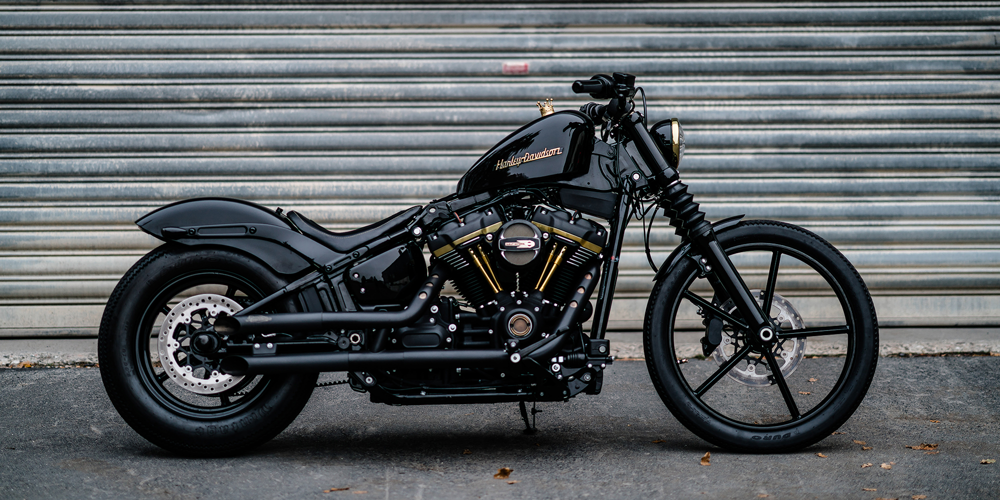

Chữ cái “R” có nghĩa là Racing , đã gây lại tiếng vang và để lại một lịch sử lâu dài khi được nhà Ducati sử dụng. Những mẫu xe R truyền thống với nhiều nâng cấp và đổi mới, được hoàn thiện dần từ thế hệ này sang thế hệ khác.
Điểm nổi bật Ducati Monster 1200R
Xe sử dụng vành hợp kim nhôm cấu hình la 17-inch đa chấu thiết kế mới kiểu Tri-W kèm lốp Pirelli Diablo Supercorsa. Hệ thống treo trước dùng giảm sóc hành trình ngược Ohlins đường kính 43mm. Gắp sau đơn là hợp kim nhôm (khác với Ducati Monster 821 gắp đôi) đi kèm giảm chấn Ohlins tùy chỉnh. Hệ thống phanh cả bánh trước và sau dùng đĩa và kẹp phanh Brembo hàng hiệu.
Monster 1200 R chính thức ra mắt góp phần mở rộng và tạo ra một phong cách mới cho gia đình Monster của hãng xe Ducati. Điểm mới đáng chú ý nhất trên chiếc xe naked bike mới là động cơ la Testastretta 11 ° DS dung tích 1198cc V-Twin cho công suất cực đại 160 mã lực và mô-men xoắn tối đa 131,4Nm. bản “R” có công suất lớn hơn 10% và mô men xoắn cực đại tăng 5,5%.
Về trang thiết bị điện tử, Ducati Monster 1200 "R" được trang bị hệ thống quản lý động cơ của xe Ducati đi kèm với các hệ thống an toàn cung cấp 3 chế độ lái. Mà thực chất là việc quản lý công suất cực đại đầu ra của động cơ,động cơ la Testastretta 11, đi kèm với gói Ducati Safety Pack (3 cấp ABS + 8 cấp DTC) và tự điều chỉnh RbW sao cho phù hợp với từng chế độ.
Xe sở hữu bộ khung sườn đậm chất thể thao và đẳng cấp hơn thế hệ đàn anh của mình.động cơ la Testastretta "11*", Đây là điều mà dường như hãng xe Ý muốn là khẳng định sức mạnh cũng như là chứng tỏ với người hâm mộ của mình đây là mẫu xe mạnh nhất từ trước đến nay.Như vậy, Ducati Monster mới mạnh mẽ và “chiều chuộng” hơn.
Những loại xe khác

CATALOGUE ĐIỆN TỬ
HỎI ĐÁP
CHÍNH SÁCH BẢO MẬT
TÌM KIẾM
TÀI LIỆU THIẾT KẾ
LIÊN HỆ
GIẤY PHÉP
THÔNG TIN
CÔNG TY TNHH YAMAHA MOTOR VIỆT NAM
Số GCNĐKDN: 0100774342
Cấp lần đầu: Ngày 22/09/2008 Đăng ký thay đổilần thứ 10: Ngày 27/03/2020 Cơ quan cấp: Sở kế hoạch và đầu tư TP Hà Nội Trụ sở chính: Thôn Bình An, Xã Trung Giã, Huyện Sóc Sơn, TP. Hà Nội